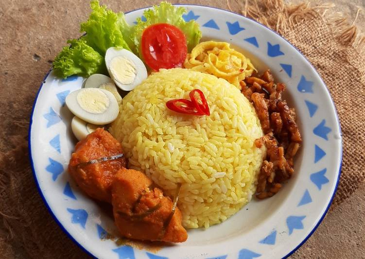

Nasi Kuning

Klik disini untuk melihat cara pembuatannya.
Nasi kuning adalah makanan khas Indonesia. Makanan ini terbuat dari beras yang dimasak bersama dengan kunyit serta santan dan rempah-rempah. Dengan ditambahkannya bumbu-bumbu dan santan, nasi kuning memiliki rasa yang lebih gurih daripada nasi putih. Nasi kuning adalah salah satu variasi dari nasi putih yang sering digunakan sebagai tumpeng. Nasi kuning biasa disajikan dengan bermacam lauk-pauk khas Indonesia.
Dalam tradisi Di Indonesia warna nasi kuning melambangkan gunung emas yang bermakna kekayaan, kemakmuran serta moral yang luhur. Oleh sebab itu nasi kuning sering disajikan pada peristiwa syukuran dan peristiwa-peristiwa gembira seperti kelahiran, pernikahan dan tunangan. Dalam tradisi Bali, warna kuning adalah salah satu dari empat warna keramat yang ada, di samping putih, merah dan hitam. Nasi kuning oleh karena itu sering dijadikan sajian pada upacara kuningan oleh masyarakat Indonesia.
Bahan-bahan:
1 liter beras dan cuci bersih
3 ruas kunyit dan haluskan
3 batang serai
5 lembar daun salam
4 lembar daun pandan
3 lembar daun jeruk
8 siung bawang merah
3 siung bawang putih
1 liter santan
1 sdt gula pasir
1 sdm garam
1 buah jeruk nipis
Langkah:
- Rebus santan bersama dengan kunyit, serai, daun salam, daun pandan, daun jeruk, bawang merah, bawang putih, garam, dan gula. Masak sambil diaduk-aduk hingga mendidih.
- Kukus beras hingga setengah matang. Angkat, masukkan ke dalam rebusan santan berbumbu. Tambahkan perasan jeruk nipis, tutup hingga santan meresap.
- Kukus beras hingga matang, lalu angkat. Sajikan dengan lauk pelengkap.
Diterbitkan oleh Affan